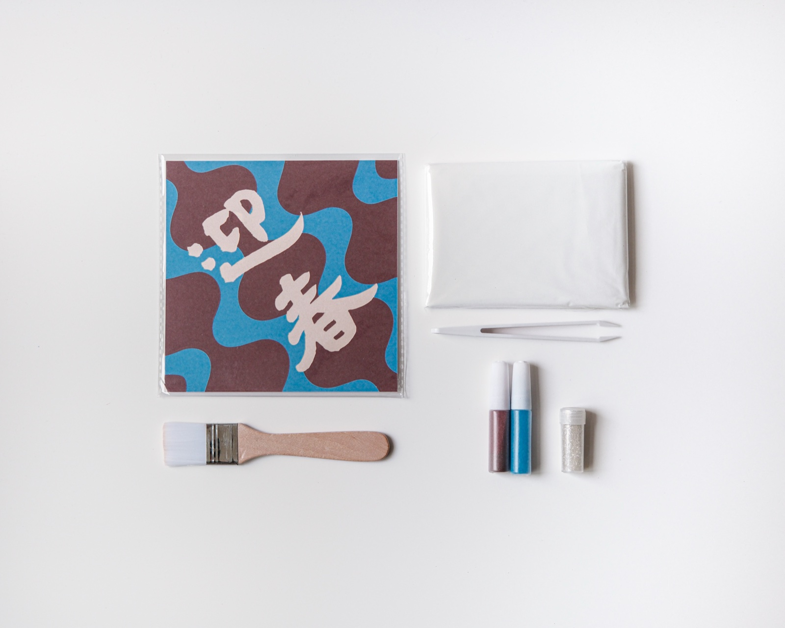
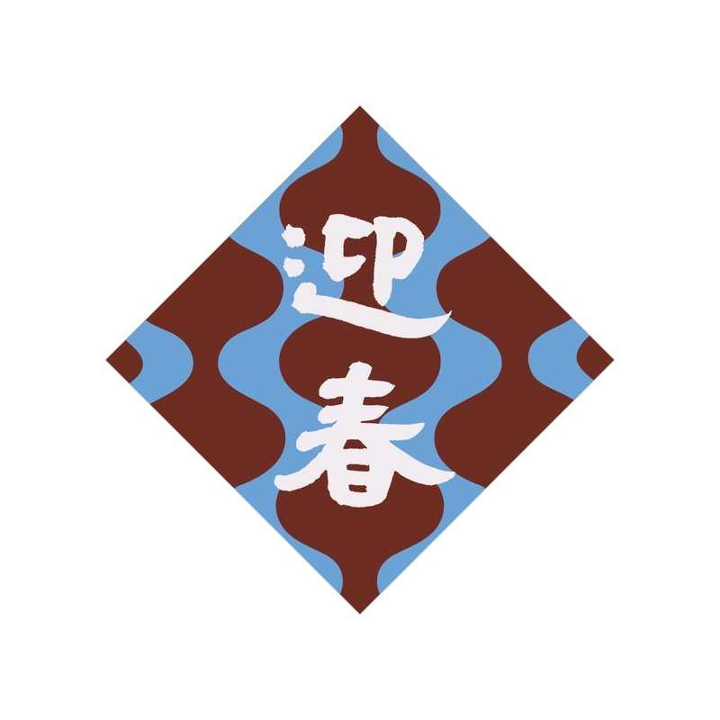
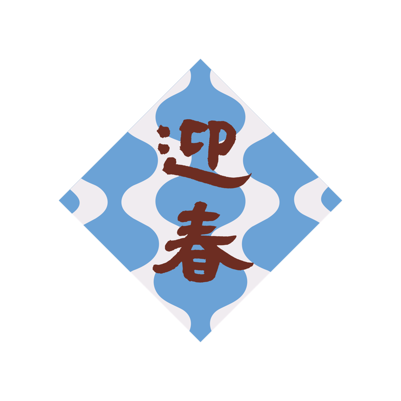

春聯砂畫材料包
燈上迎春 Lit in Chun
基礎款
2026
撕開、倒沙、鋪色，
簡單技法，拼貼出陪伴一年的春聯。
$450
1
商品詳細
成品尺寸：15×15cm
顏色數：3色

內附材料：
- 砂畫底板〔15×15cm〕... 1張
- 細砂〔2色：棗紅、藍色〕... 每色1管
- 亮粉〔1色：香檳銀〕... 1管
- 排刷 ... 1支
- 夾子 ... 1支
- 一次性防污桌布 ... 1張
- 簡易步驟圖
顏色細節
- 棗紅
- 藍色
- 香檳銀
商品介紹
這次選用的配色
底色：棗紅、藍色
字色：香檳銀亮粉「迎春」
棗紅與藍交織成一排燈籠的輪廓，像是提著燈，走過一戶一戶，說聲新年好。香檳銀亮粉寫就的「迎春」，穩穩落在正中央。
搭配自己的顏色
雖然我們為每一款設計都搭配了一組固定色，色塊怎麼分配、要不要混色、金箔灑在哪裡，都可以依照自己的喜好調整搭配。就算是一樣的材料，也能做出獨一無二的作品。


我們也會陸續推出其他顏色的加購選項，可以依照需求購買。
請注意
- 幼童使用時請大人隨旁陪伴使用。
- 材料包含細小顆粒，吞嚥會有嗆入或誤食風險。
- 亮粉顆粒細緻，請避免接觸眼口鼻，使用後請洗手。
- 沙料若沾染衣物或家具，建議盡快輕拍清除，避免顆粒卡入纖維縫隙。
- 操作時建議鋪好桌布，避免沙料灑落。
- 請將材料存放在幼兒與寵物無法取得之處。
怎麼玩
由深至淺，依序完成，
一格一格拼出完整的畫面。
圖案與沙子顏色雖然固定，
但每個色塊要鋪哪個顏色，你可以依照喜好自由調換位置，
做出獨一無二、屬於自己的版本。
包裝內附簡易圖示，跟著步驟就能完成。
適合所有年齡層，第一次接觸也能安心上手。
01撕
撕開對應色塊的貼紙，露出要鋪色的區域。
02倒
倒上對應顏色的分裝沙，蓋滿撕開的區域。
03鋪
用刷子刷勻、輕壓，讓沙粒服貼固定。
如果想要更多元的創作體驗，5款精選圖案、26色自由配色、還有金箔與特殊材質點綴，自由創作組在這裡。
延伸創作
額外顏色沙・固定套組
沙色為固定套組搭配，不開放單色自選，材料不夠用時直接加購。
純貼紙加購・單款
已有顏色沙的你，可單獨加購其他款式圖案（8 款圖案任選）。